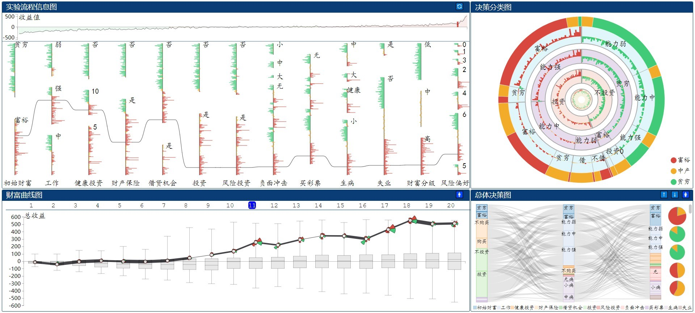

摘要:
针对经济学领域中采用实验经济学方法产生的大规模高维动态数据, 在与实验经济学专家密切合作的基础上, 提出模拟情境下真实努力任务实验数据可视分析方法. 设计决策过程信息图以全面呈现实验过程中参与者的总 体决策分布和个体行为特征; 设计自适应决策分类图、财富时序变化特征图、总体决策桑基图等方法直观地呈现实 验参与者的决策过程表现与财富结果的关联关系. 集成上述可视化设计与数据挖掘算法模型, 开发面向真实努力任 务实验数据的可视分析系统, 帮助领域专家探索式地发掘参与者决策行为特征以及财富变化关键因素, 为专家探索 和分析贫困产生及贫困循环恶化的内在机制提供依据. 大量基于真实数据的案例分析和专家反馈信息进一步验证了 该方法和系统工具的有效性和实用性.
视频演示: